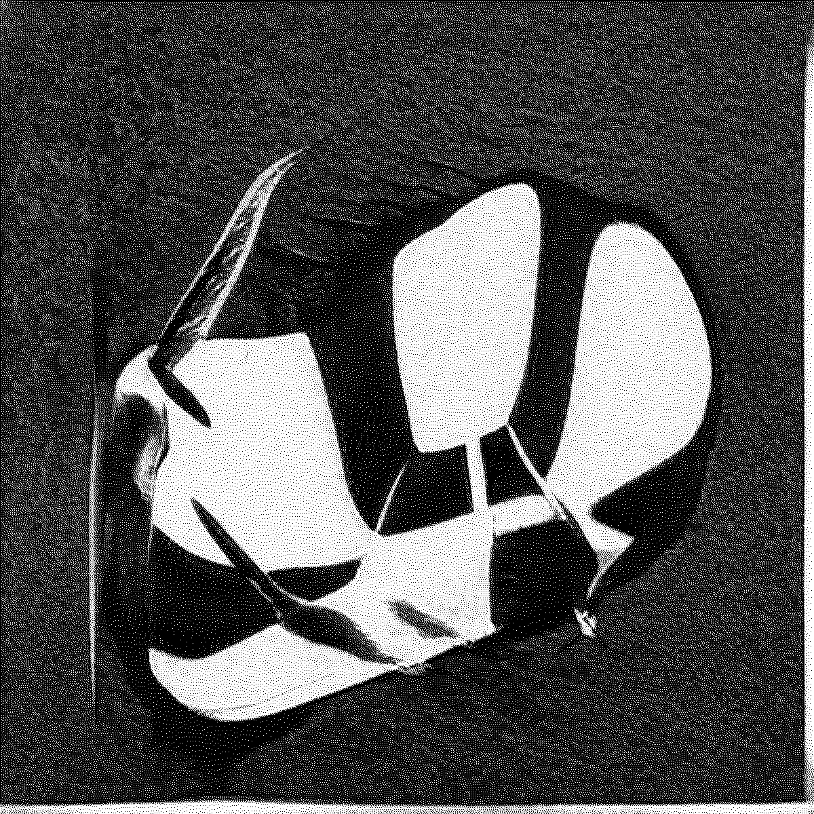
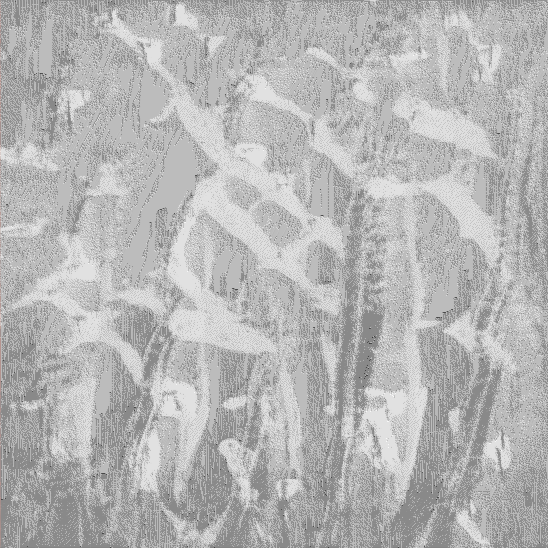
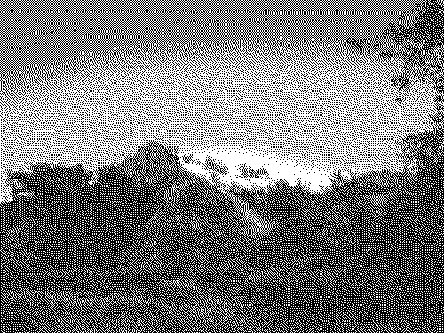

2022/12/28
Don't have much to share this time - just felt like writing and
putting up this new picture. I finally have my new desktop running
linux ("Endeavour OS btw") setup
and customized to my likings. I'd like to thank everyone over at
r/unixporn for the
dotfiles and pure aesthetics.
I guess the photo for todays post should thematically be my new
desktop setup but... I just got my dropbox all working again and found
some old art stuff I made a year or two ago. This little rock cluster
blurbily thing is one of those art pieces! I ran it through the
standard `lid -m r` and thought it came out pretttttty good. Anyways -
have a lovely rest of your year and see you in 2022 ~

2022/12/26
Hi again! ~ Merry Christmas ~ if you celebrate such things.
It almost snowed today in Seattle, which would've been the first time
I've seen snowy earth since I lived in New York - aswell as the first
time Xinrui has gotten to experience
real snow. Alas - the elements didn't line up and all we got was wet
mush melting away within 10 minutes.
I'm hoping that the
'Record Breaking'
cold temperatures in the next few days might bring some actual powder
to the Emerald City.

2022/12/22
Hello! Welcome to my home away from home. Incase you're new
here - I update this section every now and then with some recent
life-news. I recently moved back to my home state of
Washington. It's nice to be back in Seattle, surrounded by trees and drizzling
clouds.
